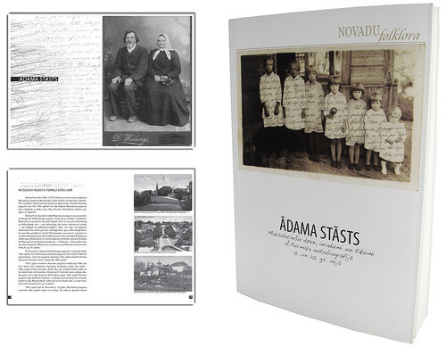

Dokumentālā literatūra
Ādama stāsts

Reinsone, Sanita. Ādama stāsts. Mazsalaciešu dzīve, tikumi un ieradumi Ā. Purmaļa autobiogrāfijā 19. un 20. gs. mijā. Rīga: Zinātne, 2008 (2. izdevums – 2011). "'Ādama stāsts" tika iestudēts Latvijas Nacionālajā teātrī Indras Rogas režijā (pirmizrāde 2011. gadā).